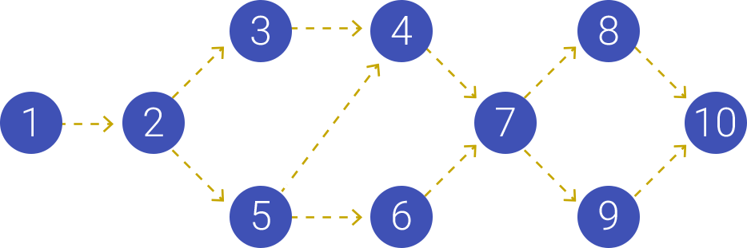

Сетевая диаграмма представляет из себя важнейший инструмент проектного управления.
Без длительностей и ресурсов команда проекта ищет взаимосвязи между операциями и выстраивают логику проекта.

Цитата
Результатом составления расписания проекта является подробный план, который содержит сведения о том, как и когда будет осуществляться поставка продуктов, услуг и результатов проекта, предусмотренных в содержании проекта, а также служит инструментов для коммуникации, управления ожиданиями заинтересованных сторон и основой для подготовки отчетности по исполнении.